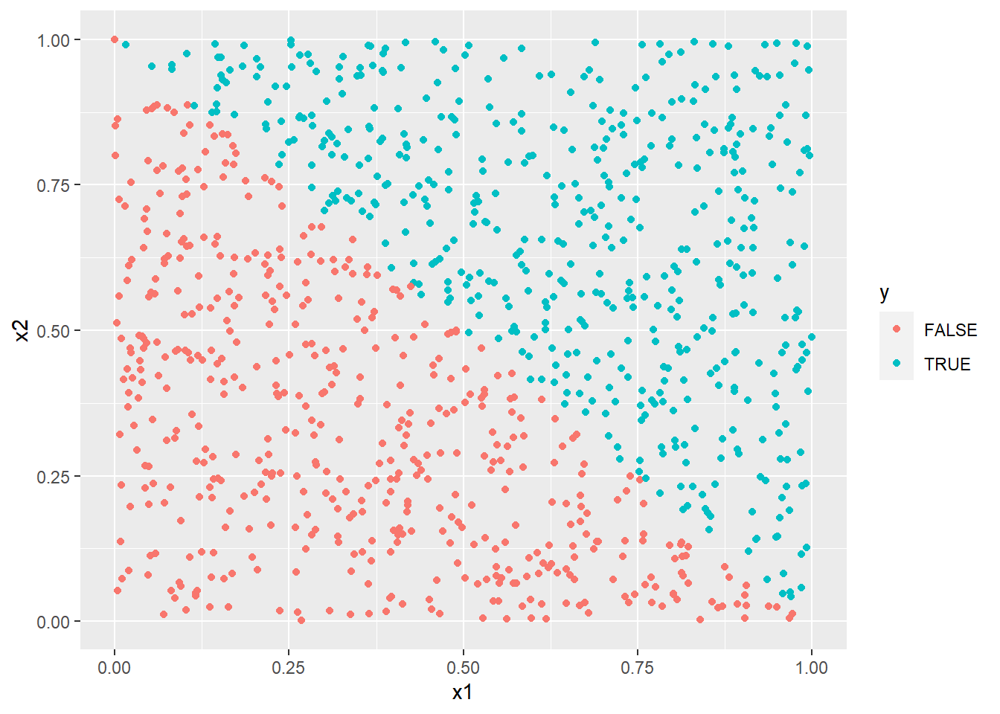
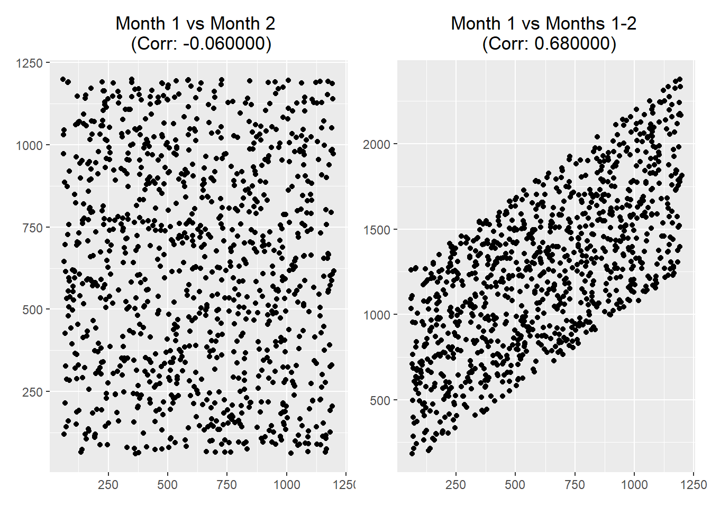
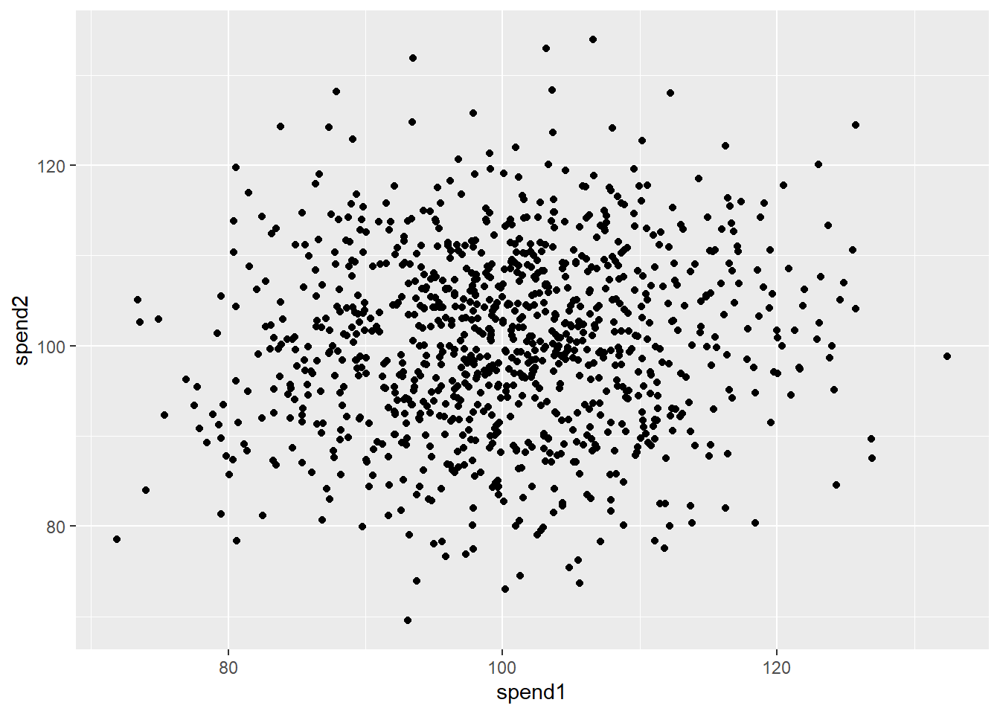

6 Incredible Inferences (TODO)
Previously, we have seen how different inputs like data, tools, and methods can add risks to our data analysis. However, the battle is not won simply when we get our first set of outputs. In this chapter, we will explore common errors in interpreting the results of our analysis by exploring aspects of bias, missingness, and confounding.
6.2 Policy-induced relationships
set.seed(123)
n <- 1000
x1 <- runif(n)
x2 <- runif(n)
y <- x1 + x2 > 1
df <- data.frame(x1, x2, y)
with(df, cor(x1, x2))
with(df[df$y,], cor(x1, x2))## [1] -0.05928
## [1] -0.5003
library(ggplot2)
ggplot(df) +
aes(x = x1, y = x2, col = y) +
geom_point()
6.3 Feature leakage
n <- 1000
minutes_month1 <- runif(n, 60, 1200)
minutes_month2 <- runif(n, 60, 1200)
minutes_tot <- minutes_month1 + minutes_month2
df <- data.frame(minutes_month1, minutes_month2, minutes_tot)Figure 6.1 shows…

FIGURE 6.1: Correlation of independent versus cumulative quantities
6.4 “Diligent” data dredging
set.seed(123)
n <- 1000
x <- rnorm(n)
random_test <- function(x) {
indices <- sample(1:length(x), length(x)/2, replace = FALSE)
group1 <- x[indices]
group2 <- x[-indices]
tt <- t.test(group1, group2)
return(tt$p.value)
}
p <- vapply(1:10000, FUN = function(...) {random_test(x)}, FUN.VALUE = numeric(1))
sum(p < 0.05)## [1] 500
n_obsv <- 1000
n_vars <- 100
mat_cat <- matrix(
data = rbinom(n_obsv * n_vars, 1, 0.5),
nrow = n_obsv,
ncol = n_vars
)
mat_all <- cbind(x, mat_cat)
df <- as.data.frame(mat_all)
names(df) <- c("x", paste0("v", 1:n_vars))
head(df)## x v1 v2 v3 v4 v5 v6 v7 v8 v9 v10 v11 v12 v13
## 1 -0.56048 1 1 0 1 1 0 1 0 0 1 1 0 1
## 2 -0.23018 1 1 0 0 0 0 0 1 1 1 1 0 0
## 3 1.55871 1 0 0 0 1 0 1 1 0 1 0 0 0
## 4 0.07051 1 0 1 1 0 0 1 0 1 1 1 0 0
## 5 0.12929 1 1 1 0 0 0 0 0 0 1 1 1 1
## 6 1.71506 1 0 0 1 1 0 1 1 1 1 1 0 1
## v14 v15 v16 v17 v18 v19 v20 v21 v22 v23 v24 v25 v26
## 1 1 0 1 0 0 0 1 0 0 1 1 1 0
## 2 1 1 1 1 1 0 0 1 0 1 0 1 0
## 3 1 1 1 1 1 0 0 1 0 1 1 0 1
## 4 0 0 0 1 0 0 0 1 1 0 1 1 0
## 5 0 1 1 0 0 0 1 1 0 0 0 1 0
## 6 1 0 0 0 0 1 1 0 0 0 1 1 0
## v27 v28 v29 v30 v31 v32 v33 v34 v35 v36 v37 v38 v39
## 1 0 0 0 1 0 0 1 0 0 0 1 1 1
## 2 1 0 0 1 1 0 1 0 0 0 1 0 0
## 3 0 0 0 1 0 1 0 0 1 1 1 1 0
## 4 0 0 0 1 1 1 1 0 0 1 0 0 0
## 5 1 0 0 1 0 0 0 0 1 0 1 0 1
## 6 0 1 1 0 1 1 0 0 0 1 1 0 1
## v40 v41 v42 v43 v44 v45 v46 v47 v48 v49 v50 v51 v52
## 1 0 0 0 1 1 1 0 1 0 0 1 1 0
## 2 0 0 0 0 0 0 0 1 0 1 0 1 1
## 3 0 0 1 0 1 1 0 0 1 0 1 1 1
## 4 0 1 0 1 0 0 0 1 0 0 0 0 1
## 5 0 0 1 0 1 0 1 1 1 1 0 1 0
## 6 1 1 1 1 0 0 0 1 0 0 1 0 0
## v53 v54 v55 v56 v57 v58 v59 v60 v61 v62 v63 v64 v65
## 1 0 0 0 1 0 1 1 0 0 1 0 0 0
## 2 0 0 1 0 1 0 1 1 0 1 0 1 1
## 3 1 1 1 0 0 1 0 1 0 1 1 1 1
## 4 1 1 0 0 0 0 1 0 1 1 1 1 1
## 5 0 0 1 1 1 0 0 0 0 0 1 0 1
## 6 1 1 0 0 1 0 1 1 0 1 1 0 1
## v66 v67 v68 v69 v70 v71 v72 v73 v74 v75 v76 v77 v78
## 1 1 1 1 0 0 0 0 1 0 0 1 0 0
## 2 1 1 0 1 1 0 1 1 1 1 1 1 1
## 3 1 0 1 0 1 1 0 1 1 0 0 0 0
## 4 0 1 0 0 0 1 0 1 0 0 0 0 0
## 5 0 0 0 1 0 1 1 1 0 1 0 0 0
## 6 0 1 0 1 0 0 0 1 1 0 1 0 0
## v79 v80 v81 v82 v83 v84 v85 v86 v87 v88 v89 v90 v91
## 1 1 0 1 0 0 0 0 1 1 1 0 0 1
## 2 1 1 0 1 1 1 0 0 1 1 0 0 0
## 3 1 0 0 1 0 0 0 0 1 0 1 0 0
## 4 0 0 0 0 1 0 1 1 0 0 0 0 0
## 5 1 1 1 0 0 1 1 0 0 1 1 0 1
## 6 1 0 1 1 0 0 0 0 1 1 0 1 0
## v92 v93 v94 v95 v96 v97 v98 v99 v100
## 1 1 1 0 0 0 1 1 0 0
## 2 0 1 0 1 1 0 1 0 1
## 3 1 0 0 0 1 0 1 0 1
## 4 0 0 1 1 0 0 1 1 1
## 5 0 1 1 1 1 1 0 1 0
## 6 0 0 0 0 1 1 0 0 1
t.test(x ~ v1, data = df)$p.value
t.test(x ~ v2, data = df)$p.value
t.test(x ~ v3, data = df)$p.value
t.test(x ~ v4, data = df)$p.value
# etc.## [1] 0.09771
## [1] 0.8734
## [1] 0.02182
## [1] 0.1525Success! ..Or success?
sample splitting with “train”
(obviously a very ugly way to do this, but that’s the point)
t.test(x ~ v1, data = df[1:(n_obsv/2),])$p.value
t.test(x ~ v2, data = df[1:(n_obsv/2),])$p.value
t.test(x ~ v3, data = df[1:(n_obsv/2),])$p.value
t.test(x ~ v4, data = df[1:(n_obsv/2),])$p.value
t.test(x ~ v5, data = df[1:(n_obsv/2),])$p.value
t.test(x ~ v6, data = df[1:(n_obsv/2),])$p.value
t.test(x ~ v7, data = df[1:(n_obsv/2),])$p.value
t.test(x ~ v8, data = df[1:(n_obsv/2),])$p.value
t.test(x ~ v9, data = df[1:(n_obsv/2),])$p.value
t.test(x ~ v10, data = df[1:(n_obsv/2),])$p.value
t.test(x ~ v11, data = df[1:(n_obsv/2),])$p.value
t.test(x ~ v12, data = df[1:(n_obsv/2),])$p.value
t.test(x ~ v13, data = df[1:(n_obsv/2),])$p.value
t.test(x ~ v14, data = df[1:(n_obsv/2),])$p.value
t.test(x ~ v15, data = df[1:(n_obsv/2),])$p.value
t.test(x ~ v16, data = df[1:(n_obsv/2),])$p.value
t.test(x ~ v17, data = df[1:(n_obsv/2),])$p.value
t.test(x ~ v18, data = df[1:(n_obsv/2),])$p.value
t.test(x ~ v19, data = df[1:(n_obsv/2),])$p.value## [1] 0.6022
## [1] 0.4947
## [1] 0.196
## [1] 0.3682
## [1] 0.2115
## [1] 0.7113
## [1] 0.3127
## [1] 0.8142
## [1] 0.9033
## [1] 0.8212
## [1] 0.4416
## [1] 0.2564
## [1] 0.5292
## [1] 0.1715
## [1] 0.0855
## [1] 0.2285
## [1] 0.6277
## [1] 0.01318
## [1] 0.2556and “test”
t.test(x ~ v18, data = df[(n_obsv/2 + 1):n_obsv,])$p.value## [1] 0.16916.5 Regression to the mean
simulate truly independent spend amounts across two periods
set.seed(123)
n <- 1000
mu <- 100
sd <- 10
spend1 <- rnorm(n, mu, sd)
spend2 <- rnorm(n, mu, sd)
df <- data.frame(spend1, spend2)
library(dplyr)
df %>%
group_by(spend1 > mu) %>%
summarize_at(vars(starts_with("spend")), mean) %>%
mutate(pct_change = round((spend2 - spend1) / spend1, 3))## # A tibble: 2 x 4
## `spend1 > mu` spend1 spend2 pct_change
## <lgl> <dbl> <dbl> <dbl>
## 1 FALSE 92.2 99.7 0.081
## 2 TRUE 108. 101. -0.063
df %>%
mutate(spend1_bin = cut(spend1, 5)) %>%
group_by(spend1_bin) %>%
summarize_at(vars(starts_with("spend")), mean) %>%
mutate(pct_change = round((spend2 - spend1) / spend1, 3))## # A tibble: 5 x 4
## spend1_bin spend1 spend2 pct_change
## <fct> <dbl> <dbl> <dbl>
## 1 (71.8,84] 80.5 97.8 0.215
## 2 (84,96.1] 91.1 100. 0.098
## 3 (96.1,108] 102. 101. -0.012
## 4 (108,120] 113. 101. -0.101
## 5 (120,132] 124. 103. -0.167
df %>%
mutate(spend1_bin = cut(spend1, 5)) %>%
group_by(spend1_bin) %>%
summarize(corr = cor(spend1, spend2))## `summarise()` ungrouping output (override with `.groups` argument)## # A tibble: 5 x 2
## spend1_bin corr
## <fct> <dbl>
## 1 (71.8,84] 0.281
## 2 (84,96.1] -0.0149
## 3 (96.1,108] 0.0438
## 4 (108,120] 0.101
## 5 (120,132] -0.165## [1] 0.49
## [1] 0.51
sum((spend1 > mu) * (spend1 > spend2)) / sum(spend1 > mu)
sum((spend1 < mu) * (spend1 < spend2)) / sum(spend1 > mu)## [1] 0.7168
## [1] 0.7267
library(ggplot2)
ggplot(df) +
aes(x = spend1, y = spend2) +
geom_point()